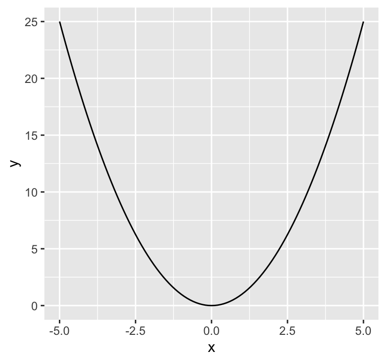
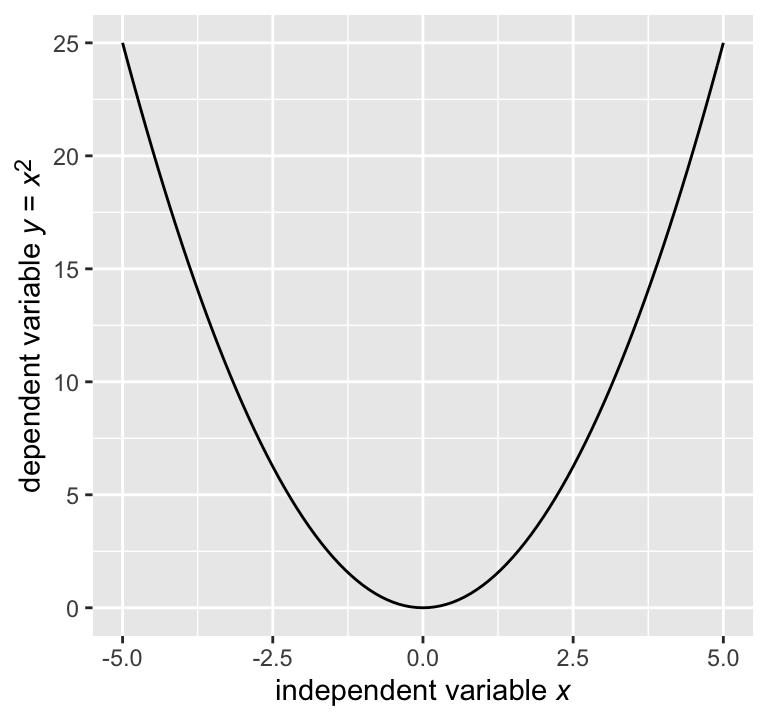
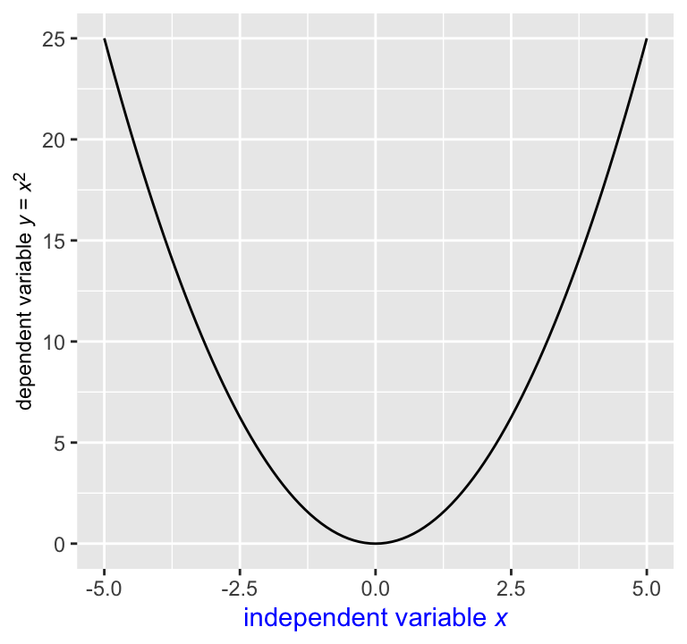
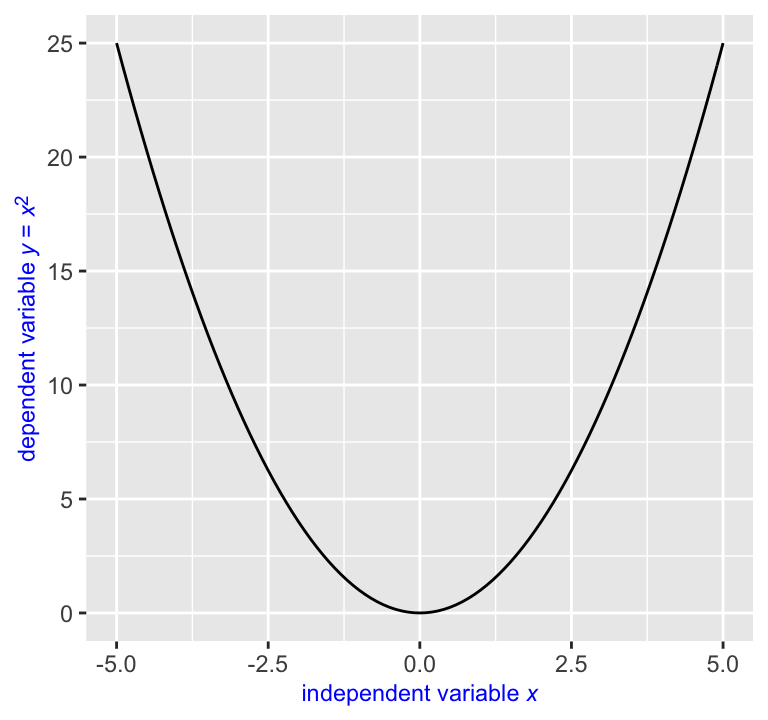
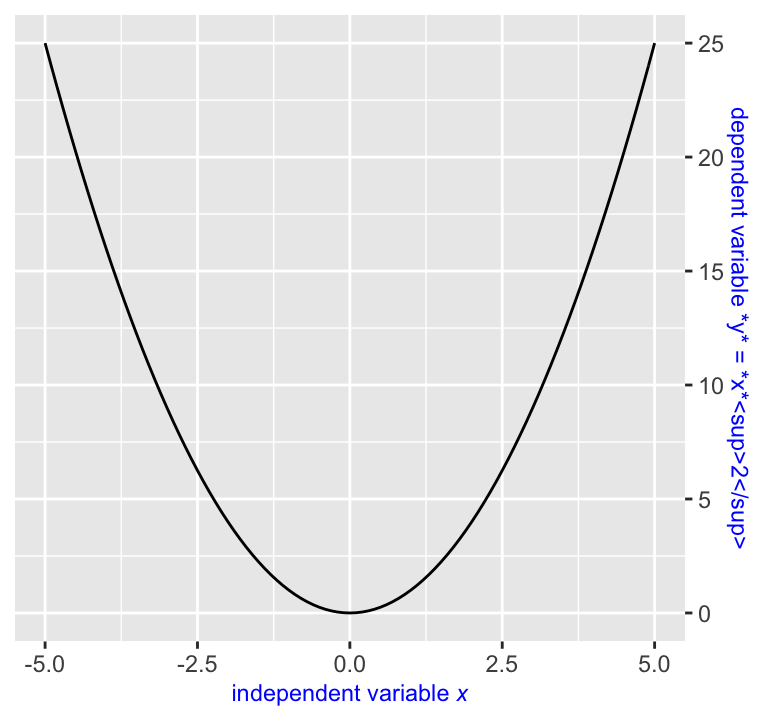
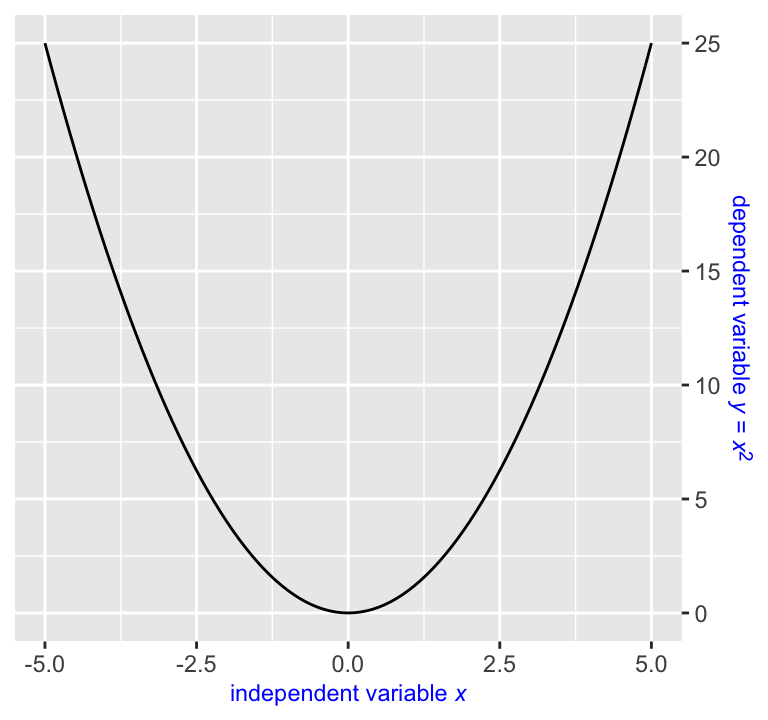
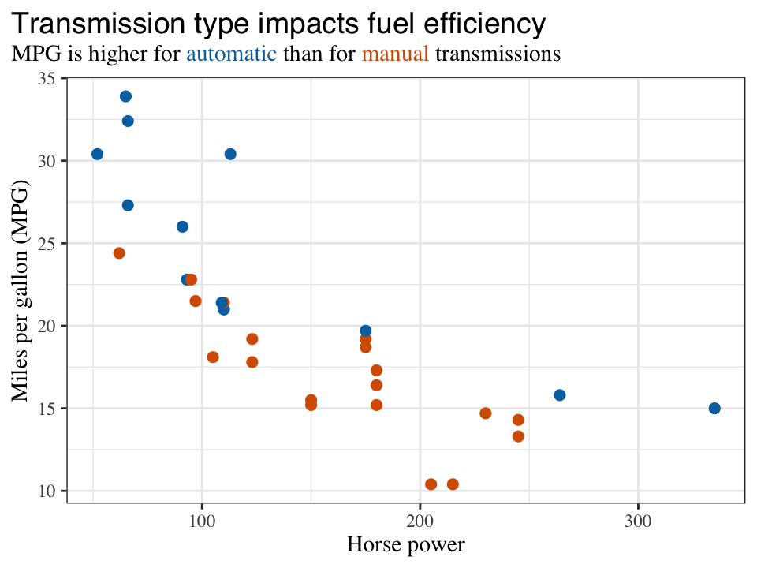

introduction.RmdThe ggtext package provides simple Markdown and HTML rendering for ggplot2. Under the hood, the package uses the gridtext package for the actual rendering, and consequently it is limited to the feature set provided by gridtext.
It is important to realize that gridtext implements an extremely limited subset of Markdown/HTML/CSS. It currently can make text bold or italics, can change the font, color, or size of a piece of text, can place text as sub- or superscript, and has extremely rudimentary image support. No other features are currently supported. As a general rule, it’s good to assume that any Markdown, HTML, or CSS feature that isn’t shown in any of the ggtext or gridtext documentation doesn’t exist.
Support is provided for Markdown both in theme elements and in geoms. In both cases, there are two alternatives, one for creating simple text labels and one for creating text boxes with word wrapping.
The ggtext package defines two new theme elements, element_markdown() and element_textbox()/element_textbox_simple(), which can be used in place of element_text() in ggplot2 themes.
Simple text labels are created with element_markdown(). To demonstrate typical usage, let’s start with a basic plot of a parabola.
library(tidyverse)
library(ggtext)
base <- ggplot(data.frame(x = c(-5, 5)), aes(x)) +
stat_function(fun = ~ .x*.x)
base
This plot would benefit from nicer axis labels. In particular, assume we want the x axis label to read “independent variable x” and the y axis label to read “dependent variable y = x2”. In Markdown, we could write the axis labels as independent variable *x* and dependent variable *y* = *x*<sup>2</sup>. However, if we do so, we need to tell ggplot2 to interpret the axis labels as Markdown and not as plain text. We do this by setting axis.title.x and axis.title.y to element_markdown(). (Note that both are set to element_text() in the default theme.)
base +
labs(
x = "independent variable *x*",
y = "dependent variable *y* = *x*<sup>2</sup>"
) +
theme(
axis.title.x = element_markdown(),
axis.title.y = element_markdown()
)
The new element element_markdown() behaves just like element_text(). For example, we can modify the color or the font size.
base +
labs(
x = "independent variable *x*",
y = "dependent variable *y* = *x*<sup>2</sup>"
) +
theme(
axis.title.x = element_markdown(color = "blue"),
axis.title.y = element_markdown(size = rel(0.8))
)
Inheritance of theme settings also works. For example, we can set both color and font size for axis.title, and then both axis.title.x and axis.title.y inherit the setting.
base +
labs(
x = "independent variable *x*",
y = "dependent variable *y* = *x*<sup>2</sup>"
) +
theme(
axis.title = element_text(color = "blue", size = rel(0.8)),
axis.title.x = element_markdown(),
axis.title.y = element_markdown()
)
Note that we used element_text() instead of element_markdown() for axis.title in the above plot. We could have used element_markdown() as well and the result would have been the same. It doesn’t matter that we set axis.title = element_text(), because the axis.title element isn’t actually rendered, only the axis.title.x and axis.title.y elements are. We’re setting axis.title only for the purpose of providing shared parameter values to axis.title.x and axis.title.y.
This is important to keep in mind when trying to create more unusual plots, e.g. with the y axis on the right. The naive code fails:
base +
labs(
x = "independent variable *x*",
y = "dependent variable *y* = *x*<sup>2</sup>"
) +
scale_y_continuous(position = "right") +
theme(
axis.title = element_text(color = "blue", size = rel(0.8)),
axis.title.x = element_markdown(),
axis.title.y = element_markdown()
)
This happens because the axis title on the right is actually drawn by axis.title.y.right. Therefore, setting that element to element_markdown() creates the desired result.
base +
labs(
x = "independent variable *x*",
y = "dependent variable *y* = *x*<sup>2</sup>"
) +
scale_y_continuous(position = "right") +
theme(
axis.title = element_text(color = "blue", size = rel(0.8)),
axis.title.x = element_markdown(),
axis.title.y.right = element_markdown()
)
Additional styling can be applied via inline CSS. The CSS properties color, font-size, and font-family are currently supported. Multi-line labels can be created by placing <br> tags where line breaks are desired.
mtcars %>%
mutate(
transmission = ifelse(am == 1, "automatic", "manual")
) %>%
ggplot(aes(hp, mpg, color = transmission)) +
geom_point(size = 2) +
scale_color_manual(
values = c(automatic = "#0072B2", manual = "#D55E00"),
guide = "none"
) +
labs(
x = "Horse power",
y = "Miles per gallon (MPG)",
title = "<span style = 'font-size:14pt; font-family:Helvetica;'>Transmission type impacts fuel efficiency</span><br>
MPG is higher for <span style = 'color:#0072B2;'>automatic</span>
than for <span style = 'color:#D55E00;'>manual</span> transmissions"
) +
theme_bw() +
theme(
text = element_text(family = "Times"),
plot.title.position = "plot",
plot.title = element_markdown(size = 11, lineheight = 1.2)
)
We set the lineheight property to 1.2 because the default lineheight is too small for multi-line text labels rendered with element_markdown().
Text boxes can be created with element_textbox() or element_textbox_simple().
Markdown-formatted text labels can be placed into a plot with geom_richtext().
Markdown-formatted text boxes (with word wrap) can be placed into a plot with geom_textbox().